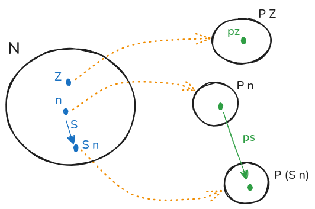
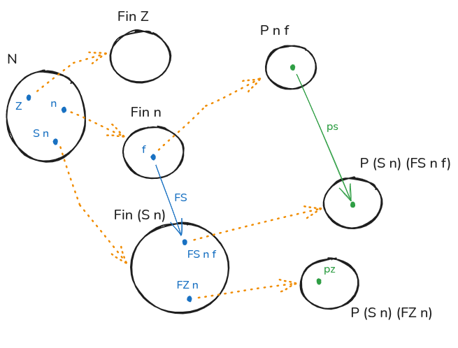

2023-08-31
以 Agda (Coq 类似) 为例总结一下 Inductive Type 的一般形式 1 ：
data T (p₁ : P₁) ... (pₖ : Pₖ) : (i₁ : I₁) → ... → (iⱼ : Iⱼ) → Set l where
c : (a₁ : A₁) → ... → (aₘ : Aₘ) → T p₁ ... pₖ t₁ ... tⱼ
...
-- Aₓ can be either:
-- 1. Non inductive and does not mention `T` at all
-- 2. Or inductive in the form
-- `(b₁ : B₁) → ... → (bₙ : Bₙ) → T q₁ ... qₖ s₁ ... sⱼ`
-- Where `T` must not occur in any `Bₙ`
说明
data ... where 定义类型本身，相当于
Formation Rule
(p₁ : P₁) ... (pₖ : Pₖ) 2 是
type 的 parameters，相当于来自整个类型的参数， 所有
constructors 构造出来的都必须具有这些相同的 parameters(i₁ : I₁) → ... → (iⱼ : Iⱼ) 3
则是 type family 的 indices，不同于 parameters，不同的
constructors 构造出来的可以是不同的（t₁ ... tⱼ
部分）；其实 parameters 也可以视为
indices，只不过因为它在整个定义里是一致的，所以可以提取出来放到前面，一般影响的是整个
type 的行为，而不一致的 index 则可以表达 type family 内 terms
之间复杂的关系c 是 constructor，可以有 0+ 个 （例如 bottom type 没有
constructor），相当于 Introduction
Rules
每一个 constructor 最右边 T p₁ ... pₖ t₁ ... tⱼ
是必须的，表达构造出来的 term 所属类型
每一个 constructor 还可以有 m 个不同的参数
aₓ : Aₓ (1 ≤ x ≤ m)，但这些参数必须满足 Strict positivity
4 ，简单说就是正在定义的类型不能出现在
“箭头” 的左边:
data Bad : Set where
bad : (Bad → Bad) → Bad
-- A B C
-- A is in a negative position, B and C are OK上面完整的一般形式看上去挺复杂的，尤其是 Strict Positive 是为什么呢？ 这里 (By Andrej Bauer) 有一个非常好的解释，直接摘抄下来：
Think of an inductive datatype \(T\) as a kind of algebraic structure: constructors are the operations which take elements of \(T\) as arguments and produce new elements of \(T\). This is very similar to ordinary algebra: addition takes two numbers and produces a number.
In algebra it is customary that an operation takes a finite number of arguments, and in most cases it takes zero (constant), one (unary) or two (binary) arguments. It is convenient to generalize this for constructors of datatypes. Suppose
cis a constructor for a datatypeT:
- if
cis a constant we can think of it as a functionunit -> T, or equivalently(empty -> T) -> T,- if
cis unary we can think of it as a functionT -> T, or equivalently(unit -> T) -> T,- if
cis binary we can think of it as a functionT -> T -> T, or equivalentlyT * T -> T, or equivalently(bool -> T) -> T,- if we wanted a constructor
cwhich takes seven arguments, we could view it as a function(seven -> T) -> Twhere seven is some previously defined type with seven elements.- we can also have a constructor
cwhich takes countably infinitely many arguments, that would be a function(nat -> T) -> T.These examples show that the general form of a constructor should be
c : (A -> T) -> Twhere we call
Athe arity ofcand we think ofcas a constructor that takes A-many arguments of type \(T\) to produce an element of \(T\).Here is something very important: the arities must be defined before we define \(T\), or else we cannot tell what the constructors are supposed to be doing. If someone tries to have an constructor
broken: (T -> T) -> Tthen the question “how many arguments does broken take?” has no good answer. You might try to answer it with “it takes T-many arguments”, but that will not do, because \(T\) is not defined yet. We might try to get out of the cunundrum by using fancy fixed-point theory to find a type \(T\) and an injective function
(T -> T) -> T, and would succeed, but we would also break the induction principle for \(T\) along the way. So, it’s just a bad idea to try such a thing.
这个对应于 Elimination Rule，其形式由 Introduction Rules (Constructors) 决定； 其归约行为则由 Computation Rule 定义
具体来说，Inductive Type (Family) 的 Introduction Rules 决定了这个类型的某种内部结构：一个 term 怎么由这个 type (family) 的其他 term 构建而成；而 Elimination Rule 则将这个 type (family) 映射到另外一个 type family 上，并且保持同样的结构
下面用一些例子说明
data ℕ : Set where
Z : ℕ
S : ℕ → ℕ
ℕ-ind : (P : ℕ → Set) →
P Z →
((n : ℕ) → P n → P (S n)) →
---
(n : ℕ) → P n
ℕ-ind p pz ps Z = pz
ℕ-ind p pz ps (S n) = ps n (ℕ-ind p pz ps n)
首先整个 induction principle 的结论是 “对所有
n : ℕ，P n 都成立（inhabited）”：
(n : ℕ) → P n（ P 是 indexed by ℕ 的类型族，属于
ℕ → Set ）
也就是对于每一个 n : ℕ，我们都需要提供一个类型为
P n 的 term；由于 ℕ
有两种已知的构造方法：
Z : ℕS n : ℕ故要提供两种构造 P 的方法：
P ZP (S n)Z 没有任何参数，所以需要直接提供
pz : P Z而 S n 是从 n 构造而来，且 n
也属于当前定义的类型
ℕ，为保持同样结构需要提供形如
... → P n → P (S n) 的函数，加上所需的参数 n
最终就是：
ps : (n : ℕ) → P n → P (S n)那么 P n 从哪里来呢？递归；就是第二条
Computation Rule
ℕ-ind p pz ps (S n) = ps n (ℕ-ind p pz ps n)即计算 P (S n) 时，P n 由
(ℕ-ind p pz ps n) 递归得出
Finite set 是带有 index 的 type family
data Fin : ℕ → Set where
FZ : (n : ℕ) → Fin (S n)
FS : (n : ℕ) → Fin n → Fin (S n)
Fin-ind : (P : (n : ℕ) → Fin n → Set) →
((n : ℕ) → P (S n) (FZ n)) →
((n : ℕ) → (f : Fin n) → P n f → P (S n) (FS n f)) →
---
(n : ℕ) → (f : Fin n) → P n f
Fin-ind p pz ps .(S n) (FZ n) = pz n
Fin-ind p pz ps .(S n) (FS n f) = ps n f (Fin-ind p pz ps n f)
整个 induction principle 的结论是 “对所有的
f : Fin n，P f 都成立（inhabited）”，又因
Fin n 本身 indexed by n : ℕ，所以是：
(n : ℕ) → (f : Fin n) → P n f（ P 是 indexed by 两个参数的类型族
(n : ℕ) → Fin n → Set ）
也就是对于每一个
f : Fin n，我们都需要提供一个类型为 P n f 的
term；同样地已知两种构造方法：
FZ n : Fin (S n)FS n f : Fin (S n)故要提供两种构造 P 的方法：5
P (S n) (FZ n)P (S n) (FS n f)第一个子句处理 FZ n 的情况，应当形如
... → P (S n) (FZ n)，由于 FZ 是非 recursive
的，所以只要补上缺少的参数 n 即可：
pz : (n : ℕ) → P (S n) (FZ n)第二个子句处理 FS n f 的情况，由于
FS n f : Fin (S n) 由 f : Fin n
构造而来，为保持相同结构应当提供
... → P n f → P (S n) (FS n f)，补上缺少的参数
n 和 f 得到：
ps : (n : ℕ) → (f : Fin n) → P n f → P (S n) (FS n f)Identity type （fix 一边的版本）是带一个 parameter 和一个 index 的 type family
data Id {A : Set} (a : A) : A → Set where
refl : Id a a
Id-ind : {A : Set} (a : A) (P : (x : A) → Id a x → Set) →
P a refl →
---
(x : A) → (e : Id a x) → P x e
Id-ind a p r .a refl = rparameter 由于是一致的，所以在 induction principle 里被提取到最前面去
整个 induction principle 的结论是 “对所有的
e : Id a x，P e 都成立（inhabited）”，又因
Id a x 本身 indexed by x : A，所以是：
(x : A) → (e : Id a x) → P x e（ P 的类型是 (x : A) → Id a x → Set
）
只有一个构造方法 refl : Id a a，故只需要提供
P a refl
再来一个依赖于 countably infinite 个其他 term 的
data T : Set where
T0 : T
T1 : (ℕ → T) → T
T-ind : (P : T → Set) →
P T0 →
((f : ℕ → T) → ((n : ℕ) → P (f n)) → P (T1 f)) →
---
(t : T) → P t
T-ind p t0 t1 T0 = t0
T-ind p t0 t1 (T1 f) = t1 f (λ(n : ℕ) → T-ind p t0 t1 (f n))主要看第二个子句：由于 T1 f : T 由
f 0 : T/f 1 : T/… 构造而得
故 P (T1 f) 应当可使用参数
P (f 0)/P (f 1)/…，即
(n : ℕ) → P (f n)，应当提供形如
... → ((n : ℕ) → P (f n)) → P (T1 f)， 补上参数
f 得：
t1 : (f : ℕ → T) → ((n : ℕ) → P (f n)) → P (T1 f)这里用 Agda 是因为比较喜欢它的语法，但它不会自动生成 induction
principle，所以用Coq 的 Check xxx_ind 检查一遍 6
(updated @ 2024)
补充一个问题，一个类型里的元素是不是仅仅就是那些由 constructor 构造出来的呢？按我目前的理解是未必，因为上述只是形式上的规则而已， 存在着满足这些规则的不同的模型，有些模型可能有一些无法直接由 constructor 构造出来的元素，例如：7 8
just like in order to define a group homomorphism out of the free group on one generator you only need to say what happens to the generator. It doesn’t mean that every element of the group is the generator
https://agda.readthedocs.io/en/v2.6.0.1/language/data-types.html#id2↩︎
类型 Pᵧ 有可能依赖
pₓ（x < y）↩︎
类型 Iᵧ 有可能依赖
iₓ（x < y）以及所有的 pₙ↩︎
https://agda.readthedocs.io/en/v2.6.0.1/language/data-types.html#strict-positivity↩︎
注意这里没有 P Z f，因为 Fin Z
是空的↩︎
Inductive N : Type :=
| Z : N
| S : N -> N
.
Check N_ind.
(*
N_ind :
forall P : N -> Prop,
P Z ->
(forall n : N, P n -> P (S n)) ->
forall n : N, P n
*)
Inductive Fin : N -> Type :=
| FZ : forall n : N, Fin (S n)
| FS : forall n : N, Fin n -> Fin (S n)
.
Check Fin_ind.
(*
Fin_ind :
forall P : forall n : N, Fin n -> Prop,
(forall n : N, P (S n) (FZ n)) ->
(forall (n : N) (f0 : Fin n), P n f0 -> P (S n) (FS n f0)) ->
forall (n : N) (f1 : Fin n), P n f1
*)
Inductive Id {A : Type} (a : A) : A -> Type :=
| refl : Id a a
.
Check Id_ind.
(*
Id_ind :
forall (A : Type) (a : A) (P : forall a0 : A, Id a a0 -> Prop),
P a (refl a) ->
forall (y : A) (i : Id a y), P y i
*)
Inductive T : Type :=
| T0 : T
| T1 : (N -> T) -> T
.
Check T_ind.
(*
T_ind :
forall P : T -> Prop,
P T0 ->
(forall t : N -> T, (forall n : N, P (t n)) -> P (T1 t)) ->
forall t : T, P t
*)https://math.stackexchange.com/questions/4950274/how-to-interpret-the-induction-principle-of-identity-type-j-rule↩︎
https://github.com/HoTT/book/issues/460#issuecomment-23364295↩︎